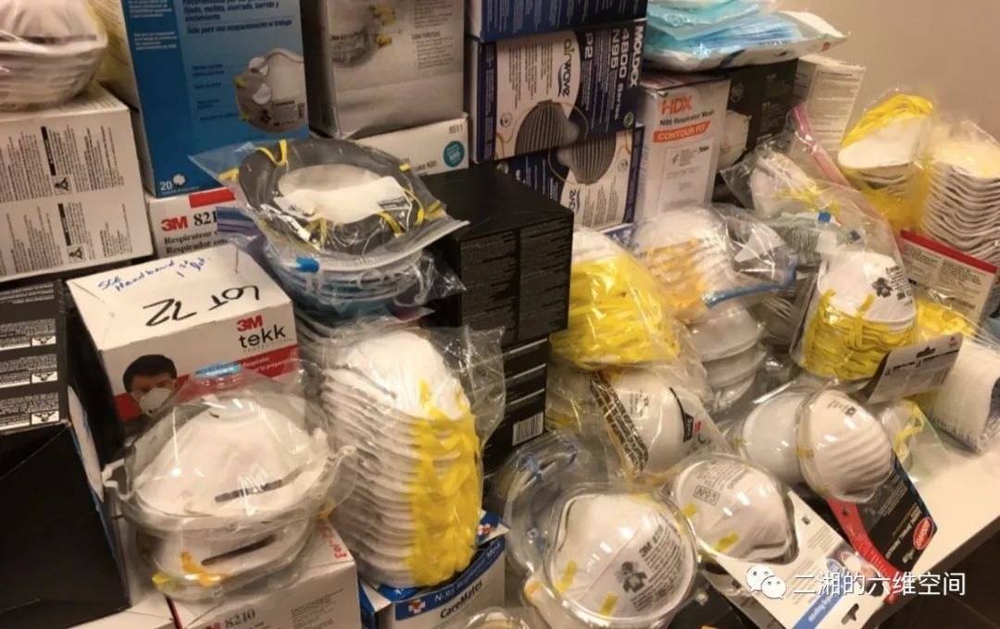
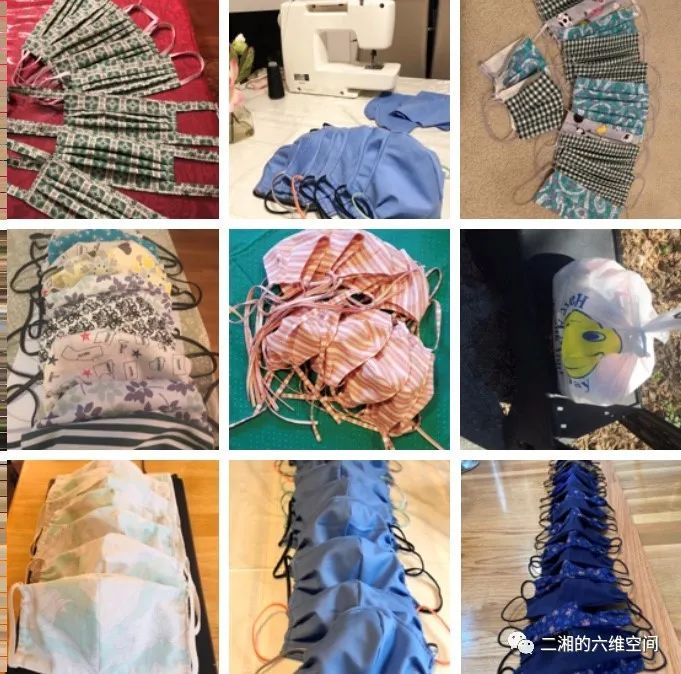
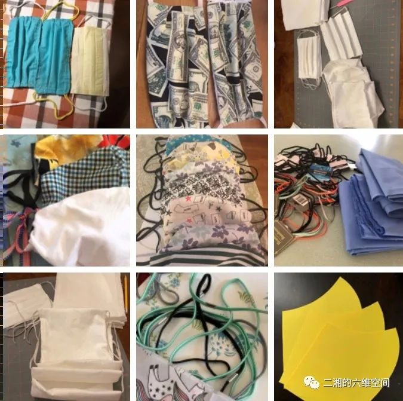
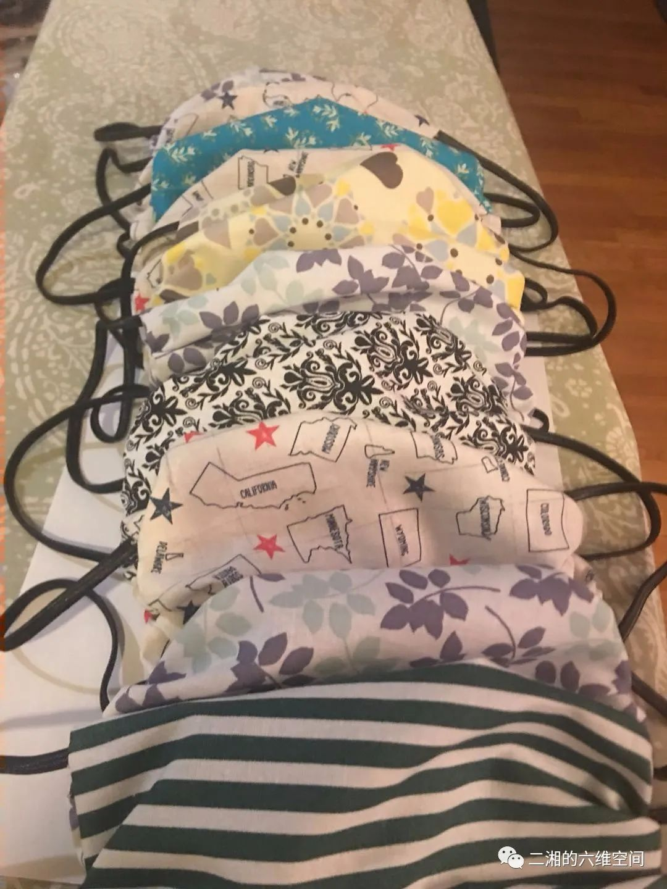

美国医院防疫物资严重短缺，医护人员称 “正拿奶油刀打仗”
原文链接 备份链接 霍普金斯大学公共卫生学院主任英格莱斯比教授指出，美国联邦政府现在需要的是一个全国性的大型物流系统，首先清算出各医院短缺的用品类型和数量，然后整合私营企业加快生产和供应。 文 |《财经》记者 蔡婷贻 编辑 | 郝洲 当 …

作者近照
美国的华人，再加上临时组织的一些救灾抗疫群，齐心协力帮助了抗灾的祖国之后，突然都有了一个共同的主题：自救，帮助本地医护人员。
持续更新中，今天的头条是黄医生写的硅谷战疫日记（2），《狂流》连载明天再更。
美国东北部的疫情（3）：缝口罩，保家园
3月23日
文／菊子
我是个忙人。微信熬了几年才加入，加入以后也只有家群，读书群，家长群等几个重要群，每个群各司其职，简短快捷，为我服务。没有办法，我要工作，要管家，有空还想读书码字。
新冠病疫一爆发，微信的使用时间马上大大增加。先是和家人联络，看着武汉封城以后，他们各自猫在自己的家里，从最初的惊恐，到慢慢接受，我和他们一起看着新闻悲喜交集，小心翼翼，互相扶持，终于熬到了今天的清零。
四周一看，周围的中国邻居群，家长群，买菜群，做饭群，都骤然活跃起来。一些群友明显地表现出惊恐和焦虑，有的人在冷静地分析和观察，更多的人在行动。口罩，防护服，呼吸机，一批一批地，从美国飞往中国。
终于，武大的樱花开放了，这个遭受病毒突然袭击的城市，终于慢慢地复苏起来。一直盼着“拐点”，盼着盼着，终于拐了，结果，没想到一下子拐到意大利，拐到西班牙，拐到美国，拐到了华盛顿州，纽约州，加州。以及麻州，我们的家园。
根据约翰·霍普金斯大学的统计，截至2020年3月23日下午5点，中国继续稳定在8万1千，而全世界确诊人数已经飙升到37万2千，意大利我已经不敢再看。那里的死亡人数已经超过6千。
美国确诊人数增至4万1千7百多，死亡577人。我们麻州确诊人数777人，死亡9人。（来源：https://coronavirus.jhu.edu/map.html）
而且，我们知道，美国和麻州的这些人数都只是实际感染和死亡人数的一部分。只有有症状、并且由自己的家庭提出请求，这些病人才能去进行新冠测试。纽约测试的人最多。我这个鸵鸟只读好数字，我关注的是，测试的人中，测出阳性的大约为10%。
微信之外，我们公司使用Microsoft Teams, 在全部转向线上远程办公以后，也有年轻同事提议建一个与工作内容没有直接关系的聊天群，让大家互相交流，调侃减压。公司团队里能人不少，加上还有一个UI界面设计的小团队，本来就是艺术家出身来这里顺便挣个饭票的，有了他们，除了音乐、笑话、漫画、搞笑视频，没准还能看到点儿真正的艺术品。我比较得意的是新学的菜谱，准备做出像样的菜时也端上去显摆显摆。
我们住的街坊有一个电子邮件群，有人新搬来了，群主迈克跟大家做个介绍，还有就是大家讨论一下附近要盖的新楼对我们的水电供应、交通有什么影响，大家如何去镇里就此讨论和投票，还有哪家的孩子可以帮忙割草、铲雪看孩子等等。上个星期，继麻州宣布紧急状态以后，镇一级政府也宣布紧急状态。其实住在我们镇里的人目前还没有感染的（敲木头），据说有两家商店的员工测出阳性，但因为他们不住在镇上，不算我们镇里的数字，去过那两家店的居民大概还是需要小心。这些信息传出来，我这些邻居们好像也不太紧张，总体气氛还是比中国人要放松得多，昨天迈克还发出一条消息，说是有人听说别的邻居在自我隔离，不出门了，他们还在自由行动，如果需要帮忙的话，随时跟他们提出来；行动依然自由、愿意帮忙的人，请留个姓名。
我们这个单子上有六七十人吧，只有四个人留了名字。大部分人还是在家按兵不动。也就是说，即便是美国人，大家也都知道自己不能随便行动的，帮助邻居最好的办法，还是留在家里。
和我们的邻居比，华人在防疫抗疫上要早两个月。邻居们还在晃晃悠悠四处闲逛的时候，微信圈里早已是十万火急。十万火急的核心，就是口罩，口罩，口罩。因为国内的经验，这里的华人知道，自己和家人需要防护，也知道，医护人员是最脆弱的一环，最需要防护，而防护的关键，就是口罩。
“新冠状病毒正在疯狂攻击美国和全世界。医疗防护用品PPE严重短缺。一线的医生护士义工们极其危险！我们绝不能让勇士们裸奔于病毒面前！”
这些群，平时以各种经络联系着在美国的华人，再加上临时组织的一些救灾抗疫群，齐心协力帮助了抗灾的祖国之后，突然都有了一个共同的主题：自救，帮助本地医护人员。
科研的，经商的，当教授的，当码农的，无论从事什么行业，从一月份以来都在读病理分析，临床诊断，模型公式。这些人，平时有各种职业，各种身份，工作内容和兴趣各有不同，现在共同的话题，就是口罩，口罩，口罩。型号，适用环境，运输途径，海关规定，物流途径。
帮助的方式，首先还是搜集捐款，从国内购买。写这个邮件的，已经成了如假包换的国际口罩物流专家：
“这是我这几天做义工的总结：我们捐赠小组花了几天还没搞定。情况一天一变。基本上不会从网上订了给医院。原因：
1. 已经有团体从中国运货来，在美国海关全部征用。
2.美国医院质量把关很严。一旦医护人员在工作中被感染，他可以起诉医院，医院会追究捐赠人，最后整个华人社会买单，我们失去在美国立足的根本诚信。
3.国内前段时间很多工厂转型去生产口罩。现在供过于求。拼命想往欧美推销。但大部分口罩没有CE认证没经FDA clear.不过有相当多厂家号称有FDA认证。我们花了太多经历去一一看论证书。很遗憾都是假的，厂家只是在FDA注册而已。这和clear完全是两回事。经过这几天花了无数精力，我们只锁定几个厂家。其余一律不再看了。
4.网上订的只能百姓用。提醒大家不要捐工业用口罩，一定要捐FDA批准的。否则宁可捐钱。”
看见转发的各种募捐的群，校友群，地区群，家长群，邻居群，教会群，购物群，我无暇参与组织，只能捐出一点钱，表示一下支持，减轻一点对医护人员的内疚。
看到医护人员纷纷中招，有些群，本来是为自己购买口罩的，结果买到口罩的人都说，我们家里已经有一些，而且我们不出门就可以，这些口罩，还是你们一起拿去，捐给更需要的医院和医护人员吧。
不光是华人，美国工业技术界的大佬们纷纷谈论的，不是高精尖的征服太空、人工智能的高大上难题，而是口罩，口罩，口罩。伊隆·马斯克说特斯拉给西雅图寄出五万只口罩，脸书将公司在火灾期间购买的七十二万只口罩捐了出来。苹果公司老总提姆·库克没有说出具体数字，但美国副总统在白宫新闻发布会的时候提到，苹果公司将捐出两百万只。
马斯克还说，特斯拉公司本周将提供大约1200台呼吸机，用来治疗危重病人。
其实，名牌口罩3M和霍尼韦尔(Honeywell)都是美国公司，只不过很多生产车间都搬到国外，包括中国。现在，位于明尼苏达的3M公司一直在加快生产，公司说，他们昨天刚刚运出五十万只口罩，运往了重灾的西雅图和纽约。他们每个月的产量是一亿只口罩。

图片来自网络
买不了的时候，就自己做。对，波士顿这里，就有一些能干的女士们开始自己动手，缝制口罩。在新建的抗疫群里，看到这样一条信息，令我十分感动：
“我转一个自发组织的为BWH做口罩的群。欢迎加入。
转：姐妹们，大家把自己微信名字后加上住的镇名，我们每镇找个负责人，我明天和Brigham and woman text时，把负责人拉进去，便于和大家沟通如何交货。
谢谢姐妹们。Brigham and woman 的人联系我了，需要做的mask当N95外的保护层，也可以给没有任何防护的工作人员用。他们有3000多护士。做好后，他们会到家来取，然后统一消毒。如果你们有缝纫机，咱们可以一起干。这回为咱们自己加油。
我发了做口罩的图纸和做法视频。如果你们喜欢自己的做法，做好后也可以捐。
材料：纯棉布(我用新床单布)和松紧带(已脱销，我从Amazon 订了下面这种松紧带……”
做口罩的不仅仅是华人，脸书上，早已经有人贴出了视频，讲授如何制作符合FDA规定的口罩。和一位朋友聊起来，原来她就在本镇华人的爱心口罩制作群里。本周之前，他们一直在搜集和捐赠N95和普通医用口罩。医院反馈说，他们的口罩依然不够，每只N95大概要戴一天或一天以上，如果能够用布口罩罩在N95外面，布口罩可以清洗，N95的使用寿命就可以长一些。
这个周末，这些能干的姐妹们开始动手，买布，裁剪，缝纫，十个，二十个，三十个，聚少成多，然后搜集到一起送给医院。


所有手工口罩照片均来自“爱心口罩制作群”
镇里的美国邻居们也在做，她们在为我们的社区医院爱默生医院缝口罩。缝制百纳被，本来也是一种美国传统，一代一代的美国女性，一针一线地缝补着花被，送给新婚的新娘子，被子既为保暖，也是祝福，那里，凝聚着最虔心的祈愿，最深厚的爱。
我笨手笨脚，缝纫机偷偷踩过，只会倒转，只能在这里，暗暗为这些勇敢又能干的姐妹们喝彩，有她们的守卫，我们的亲人就会健康，守护我们的医护人员就会安全，我们的家园就会平安。

附： DIY口罩小指南
这些自制口罩是什么用途？
——护士们可以用来套在N95口罩外面增加N95的使用时间
——也可以在自制口罩里面塞filter
——也可以给没有任何防护的工作人员用
——可以自己外出使用
哪些医院现在收这样的自制口罩？
现在主要是Brigham and Women’s Hospital的护士在收。Emerson Hospital也有此意图。
做自制口罩需要什么样的材料？
——全新的棉布。100% cotton的就可以。花色不限，不要太厚。太厚不好做。
——松紧带。From Emerson Hospital: Elastic should be sturdy enough to tolerate multiple laundering.
做自制口罩的材料哪里有卖？
——Joann’s
——https://www.fabric.com/find?searchText=elestic
——Amazon
——棉布也可以用全新的床单
——1/8-1/4“的松紧带几乎是买不到了，或5月以后才有货，实体店可能都没有了。最便宜的松紧带在Amazon，点击原文去购买网站。
我应该怎么做口罩？
现在最需要的是弧线立体型的，供罩在N95上用的。
【作者简介】菊子：武汉人，燕园学子，北美码农，个人微信公号“菊说八道”。

点击阅读更多文章

《狂流》：第1章 第2章 第3章 第4章 第5章第6章 第7章 第8章 第9章第10章
更多：彩虹之上的火车年少读方方 分裂的朋友圈 遗忘武汉李文亮医生 美国疫情德国疫情 钻石游轮亲历 朱令铊中毒
他山之玉：林白李西闽 刘瑜 冯唐宝树 北星 陈楸帆郝景芳严锋邓安庆 舒飞廉
欢迎收看二湘空间的世界疫情系列，六维，九维都会发。

关注“二湘的九维空间”收看更多疫情日记
原文链接 备份链接 霍普金斯大学公共卫生学院主任英格莱斯比教授指出，美国联邦政府现在需要的是一个全国性的大型物流系统，首先清算出各医院短缺的用品类型和数量，然后整合私营企业加快生产和供应。 文 |《财经》记者 蔡婷贻 编辑 | 郝洲 当 …
原文链接 备份链接 作者近照 【作者按】截止2020年3月21日美东时间晚7点，美国总确诊人数25730人，死亡311人。纽约州是疫情重灾区，11727人确诊，60人死亡。华盛顿州1793人确诊，94人死亡。加州1370人确诊，24人死 …
原文链接 备份链接 作者近照 这是纽约的一个朋友写的情况，其实随着疫情的蔓延，美国许多医院都出现了口罩等医护用品的短缺。好友梅玫在硅谷帮忙收集民众捐赠的口罩送到医院，我在的南加州也有TOC在组织捐款捐口罩给当地医院。前一阵大学同学给我们北 …
原文链接 备份链接 中国用一种决绝的态度去处理疫情的防控，效果不错，而美国刚刚开始不久，最后效果怎样，有待观察。 口述 | James Zhou 整理 | 刘朝晖 上个周末，晴空万里。我在家里包了点馄饨，从新泽西的家中开车赶往30英里外 …
原文链接 备份链接 作者近照 欢迎收看二湘空间的世界疫情系列，六维，九维都会发，11维继续发方方日记，今天的《狂流》连载发在六维的二条。 菊子：美国东北部疫情日记（1） 饶蕾：纽约疫情日记（1） 大梨：德国疫情 美国疫情实录：西雅图·旧金 …